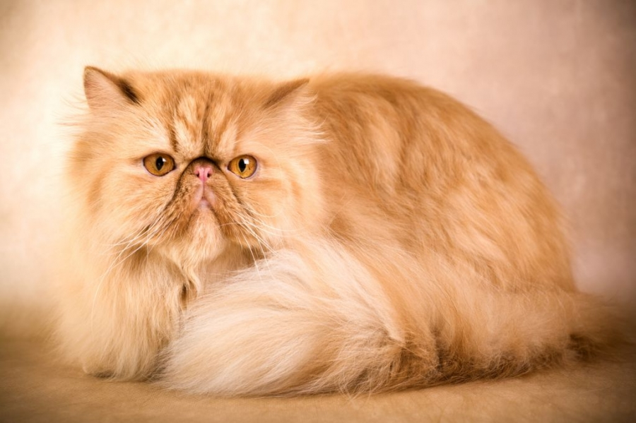
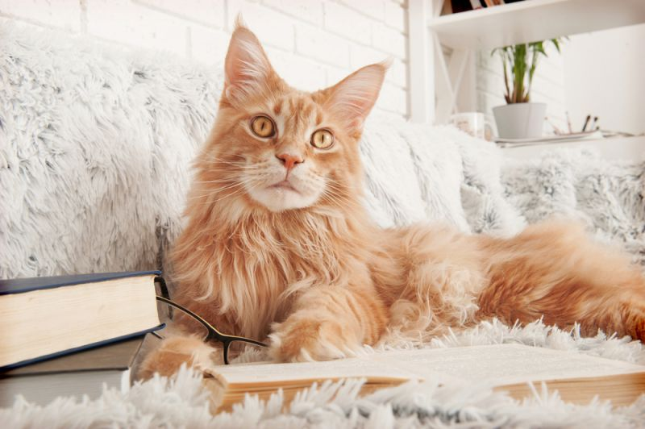
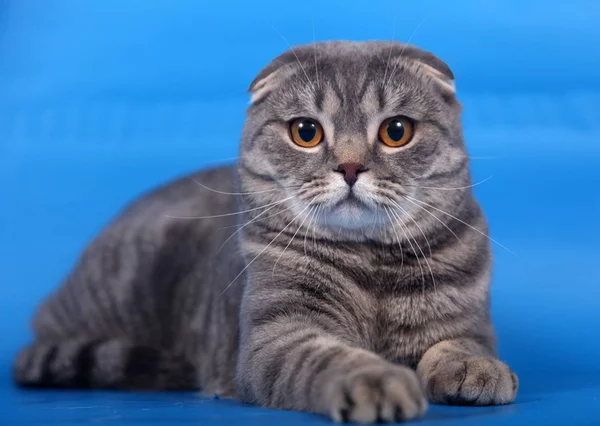
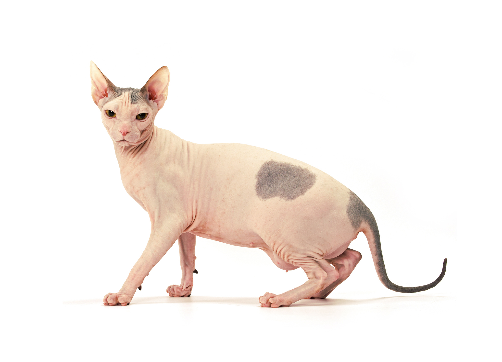

5 Самых популярных пород кошек
| № |
Порода |
Поисковые запросы за месяц |
| 1 |
Мейн-кун |
293 935 |
| 2 |
Сиамская |
45 642 |
| 3 |
Вислоухая |
45 251 |
| 4 |
Сфинкс |
40 343 |
| 5 |
Персидская |
17 592 |

Отличительной чертой сиамской кошки является ее характерный окрас, при котором туловище имеет светлый окрас (от бежевого до сливочного или темно-кремового), а лапы, уши, хвост и мордочка (пойнты) – темно-коричневого или черного цвета. Интересный факт, но сиамские котята рождаются абсолютно белыми, и лишь через несколько дней начинают темнеть. Окончательный окрас устанавливается примерно в 6-10 месяцев.
Шерсть у сиамов короткая, плотная и блестящая, почти не имеет подшерстка, так что порода прекрасно подойдет и для аллергиков.
Сиамская кошка – необычайно гибкое, стройное и грациозное животное. У нее вытянутый скелет, но при этом мускулистые плечи и бедра. На небольшой голове расположены треугольные уши, а ярко-голубые глаза миндалевидной формы идеально сочетаются с общим окрасом тела. У сиамов длинные тонкие лапы и длинный вытянутый хвост, чуть сужающийся к концу.

Отличительным признаком породы является маленький, широкий и курносый нос. Тип кошек с очень маленьким, вздёрнутым носиком называют «экстремальным», а относительно длинным и слегка вздёрнутым носиком — «классическим». Также выделяются короткие и мускулистые лапы. Экстремальный тип разводится в основном в США, а классический — в Европе.
Вес взрослой кошки может достигать 7 килограммов. Слишком плоский или слишком высокий череп, слезящиеся глаза, затрудненное дыхание, слишком лёгкое или растянутое тело относятся к серьёзным недостаткам, ровно как и слипшаяся, излишне напудренная или неровная шерсть. Наиболее частые недостатки кондиции — это колтуны или проплешины после вычесывания колтунов.

Крупнейшая порода кошек, самцы весят от 5,9 до 8,2 кг (кастрированные — до 12 кг), а самки от 3,6 до 5,4 кг (стерилизованные — до 7,5-8,5 кг). Высота в холке у взрослых кошек достигает от 25 до 41 см, а общая длина с хвостом до 135 см (длина хвоста до 36 см). Полный потенциальный размер кошки достигается в возрасте от 3 до 5 лет, в то время как у большинства других кошек — в возрасте 1 года.
Однако есть и другие медленно взрослеющие породы, тоже крупного размера (например, норвежская лесная). Все особи породы мейн-кун имеют небольшие кисточки на кончиках ушей. Длина тела мейн-кунов составляет метр и более, самый длинный официально зарегистрированный мейн-кун имел тело длинной 1 метр 23 сантиметра.

Кошка средних размеров, крепкого, гармоничного телосложения. Шерсть короткая, густая, эластичная, очень мягкая на ощупь, упругая, прилегающая к телу. Окрасы самые разнообразные, солидные (однотонные): черный, голубой, красный , кремовый, шоколадный, лиловый, с рисунком (табби): мрамор, пятно, тигр, окрасы с белым: ван, арлекин, биколор.
Также у кошек шотландской породы может быть тиккированый и колор-поинтовый окрас, серебристый и золотистый подшерсток. Уши поставлены широко и сложены так, что их верхняя часть прикрывает ушное отверстие, то есть свисают вниз. Чем более плотно уши прижаты к голове, тем ценнее представитель этой породы.

Канадские сфинксы — одна из нескольких пород кошек. В нынешний момент это полностью сформированная и достаточно стабильная порода с 50-летним стажем, передающая свои признаки по рецессивному типу. Порода признана всеми международными фелинологическими организациями. Другие лысые кошки - петерболд и донской сфинкс - относительно молоды (около 15 лет) и находятся на пути становления.
Причина утраты шерстяного покрова родоначальниками этой породы, впрочем как и всех остальных пород сфинксов, неясна. Скорее всего, это связано с единичными естественными мутациями, которые впоследствии были поддержаны и сохранены в потомстве с помощью скрещивания с короткошёрстными породами кошек. Сейчас потомство бесшёрстных родителей тоже рождается без шерсти, хотя она также может присутствовать в разном количестве на мордочке и хвосте.